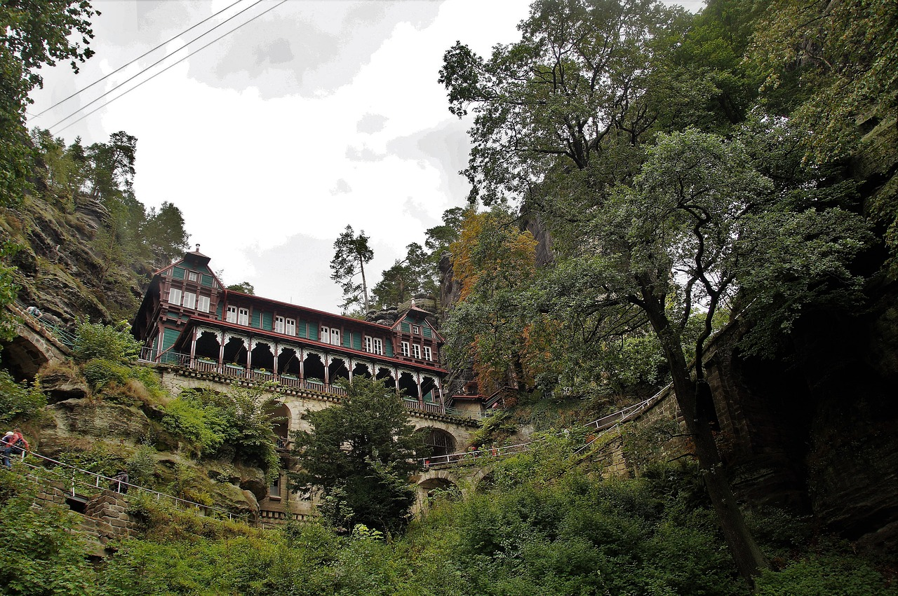
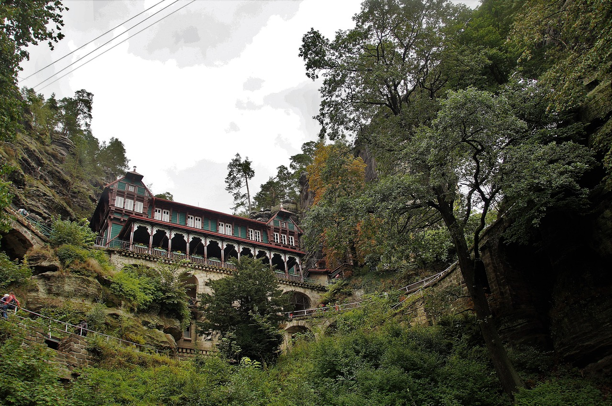

Pravčická brána stojí na svém místě odnepaměti. Je výsledkem milióny let trvajícího zvětrávání v méně odolné části skalního masivu, tvořeného kvádrovými pískovci turonského stáří.
V počátcích turistického objevování krásy Pravčické brány stával u její paty malý kůrou pobitý domek, sloužící jako výčep. Přístupová cesta od Hřenska zv. Pelagiensteig byla vydlážděna již koncem 70. let 19. stol. a tehdy došlo i k vybudování promenádní stezky směrem k Mezní Louce.
Roku 1881 nechal majitel panství kníže Edmund Clary-Aldringen vystavět u Pravčické brány výletní zámeček Sokolí hnízdo. Pozval si k tomu účelu dělníky z Itálie a to z prostého důvodu – byli nejlevnější pracovní silou. Celý zámeček byl postaven během jediného roku, což je při jeho rozsáhlosti a době, ve které byl stavěn, čas téměř rekordní. O několik let později bylo na skalních vyhlídkách v bezprostředním okolí vybudováno zábradlí.
Za vstup do areálu se začal brzy po vystavění restaurace platit poplatek.
Pravčická brána je největší přirozená skalní brána na našem kontinentu, národní přírodní památka. Je považována za nejkrásnější přírodní útvar Českého Švýcarska a tvoří symbol celé oblasti.
Od místa vstupu do areálu se rozbíhají upravené stezky a schodiště na jednotlivé vyhlídky, odkud můžeme pozorovat samotnou Pravčickou bránu nebo se kochat působivými pohledy do blízkého i vzdálenějšího okolí.
Pravčickou bránu navštívily od dob, kdy byla "objevena" pro turistiku, prokazatelně milióny lidí. Mezi mnoha známými osobnostmi se jejím půvabům obdivoval hned dvakrát – v letech 1831 a 1851 – slavný autor pohádek Hans Christian Andersen. Je bezesporu jasné, že také zde načerpal mnoho inspirace pro svou práci.
 
